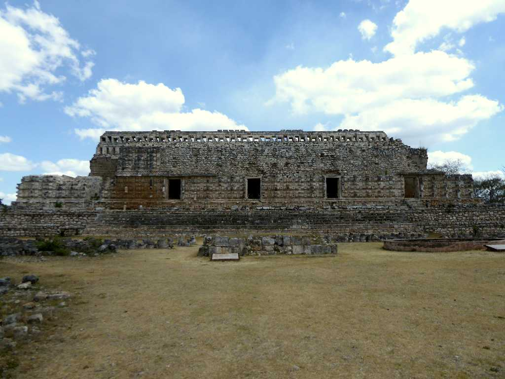
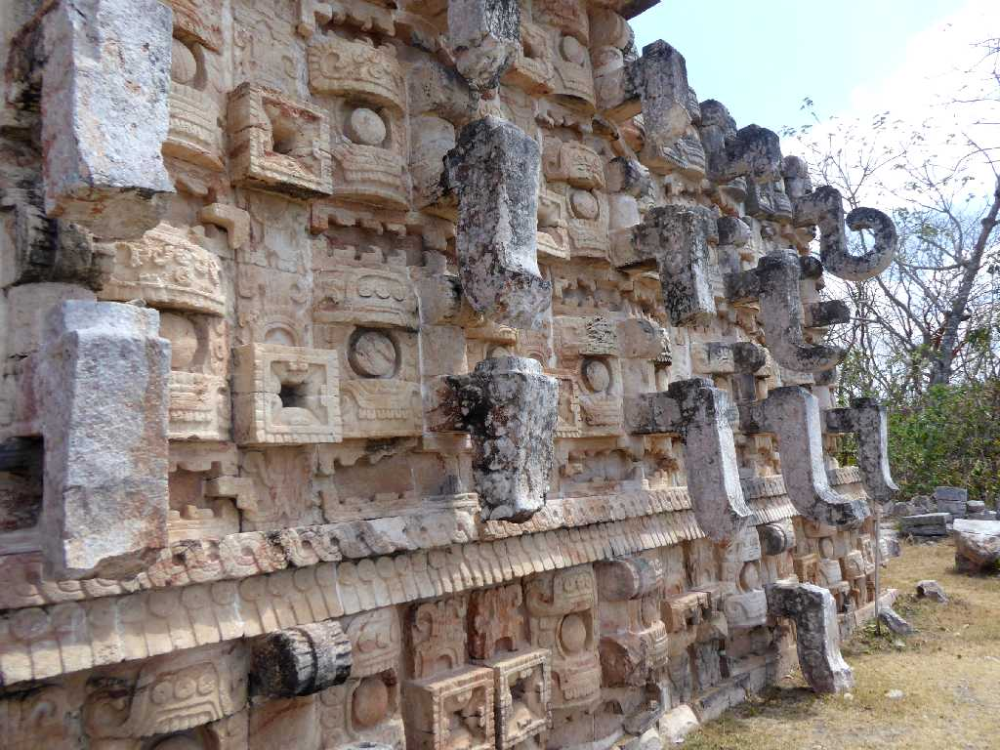
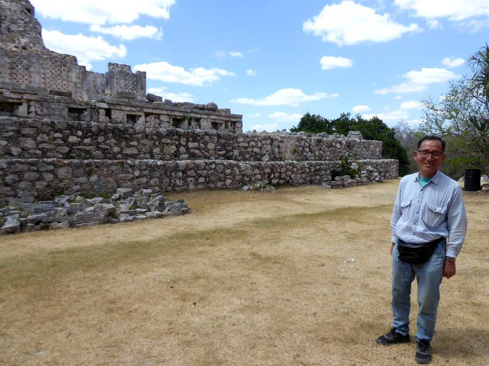
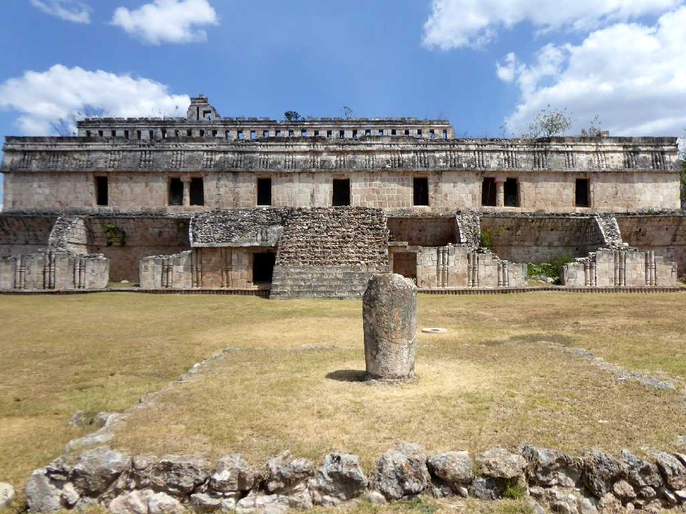
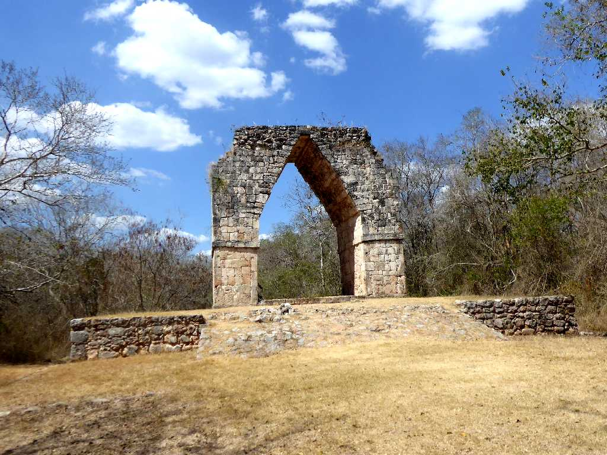
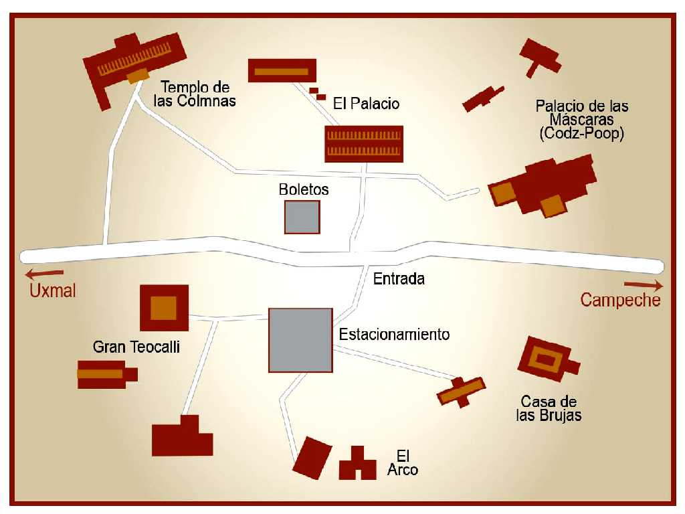

Codz Poop (Palacio de las Mascaras) Kabah
マヤ文明古典期の宮殿などが残る都市カバーはチャック神で覆われたコズポープが美しい

Chac Codz Poop (Palacio de las Mascaras) Kabah
雨の神チャック神の仮面

March 20 2020 Kabah

El Palacio Kabah

El Arco Kabah
